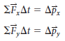
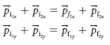

Collisions in Two Dimensions
Collisions in Two Dimensions: Glancing Collisions
The laws of conservation of momentum and conservation of kinetic energy will apply just as they did for one-dimensional interactions.
However, to calculate momentum for two-dimensional problems, consider the x-components and y-components of force and motion independently.
Components of Momentum
The final velocity of each object involves two unknowns: the two components of the velocity vector. For objects in motion in two dimensions, the change in momentum for each component can be considered independently:

Similarly, the conservation of momentum equation can be expressed in terms of horizontal and vertical components:

Consider the collision of two billiard balls shown. In this shot, the cue ball (1) will collide with the target ball (2), initially at rest, sending it at an angle f toward the corner pocket, and the cue ball will continue traveling at an angle u from its original direction of travel. Both objects are traveling at an angle to the directions of their original courses. This type of collision is called a glancing collision.

Watch this video about Glancing Collisions
Practice
A hockey puck of mass 0.16 kg, sliding on a nearly frictionless surface of ice with a velocity of 2.0 m/s [E], strikes a second puck at rest with a mass of 0.17 kg. The first puck has a velocity of 1.5 m/s [N 31° E] after the collision. Determine the velocity of the second puck after the collision.